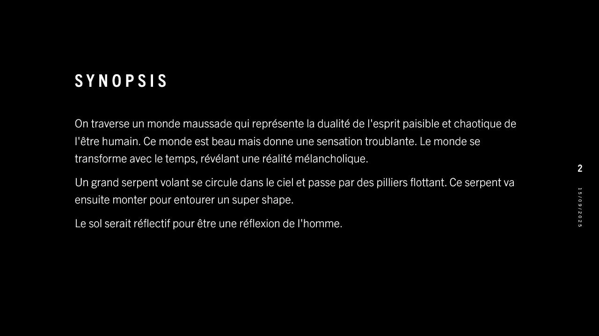
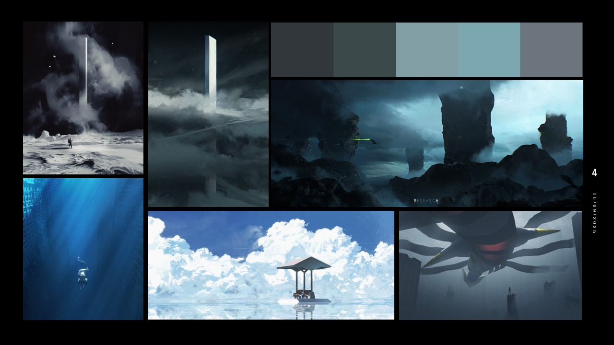
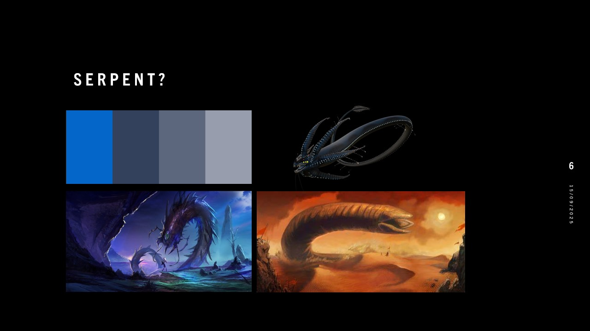
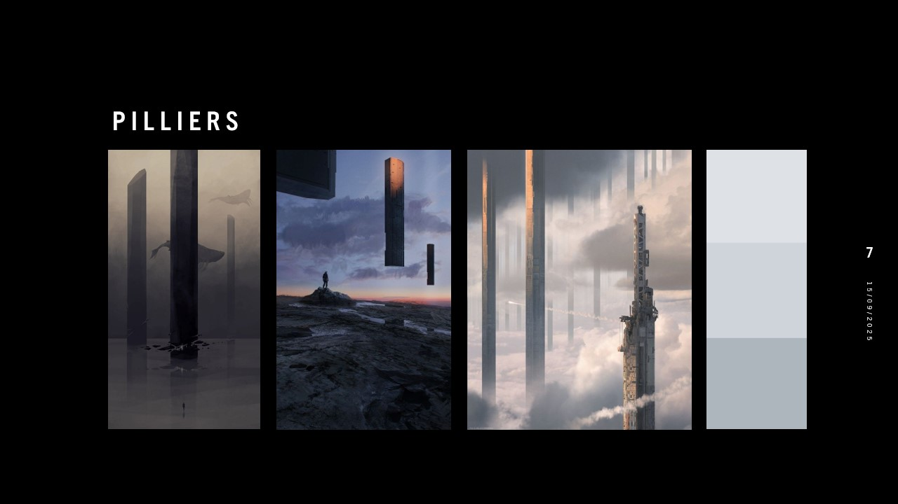
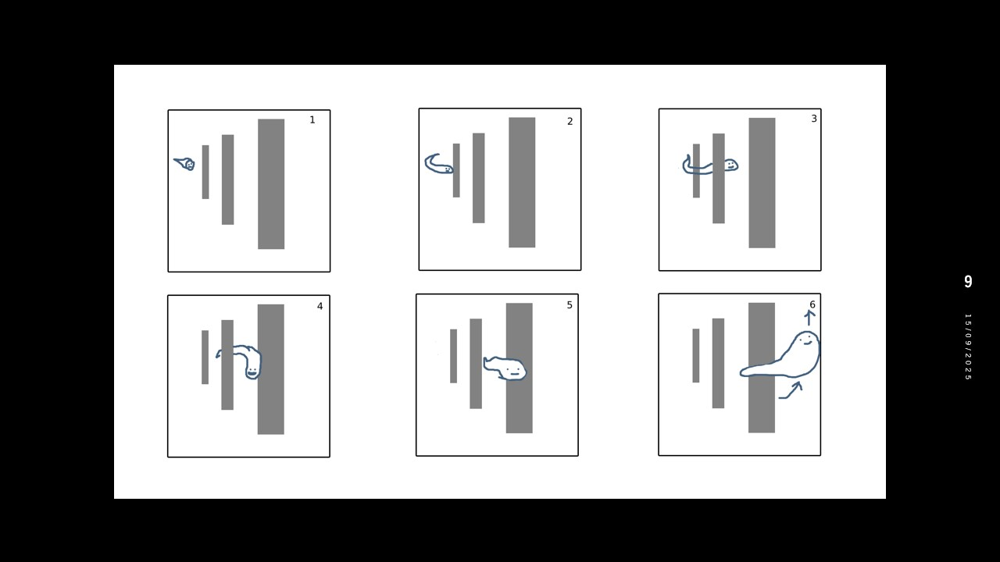
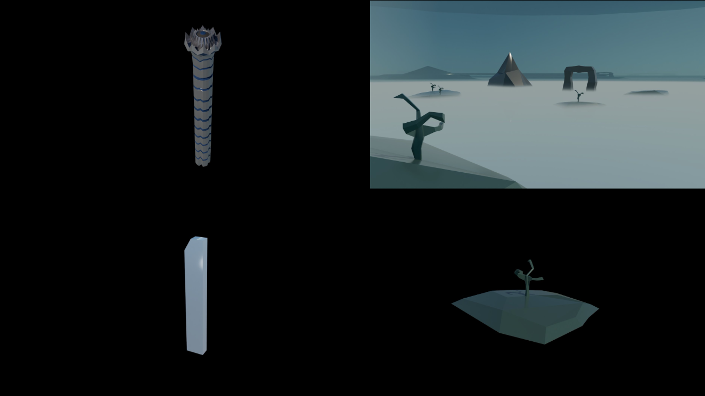
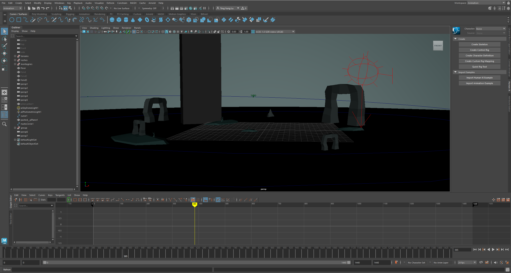

{{ description }}
Roles
{{ role }}
Logiciels
{{ software }}
En savoir plus
Documentation de Speculum
1. Synopsis et concept: J'ai commencé par établir l'ambiance et la thématique que je voulais, suivi par une idée du déroulement du court métrage que j'envisageais.
2. Planche d'inspiration: J'ai cherché des images qui pouvaient capturer l'ambiance désirée, ainsi que des références pour m'aider à modéliser mes modèles.
  3. Scénarimage: J'ai dessiné pour le scénario de mon animation.
4. Modélisation: J'ai modélisé et rendu les objets nécessaires à mon animation sur Maya.
5. Animation: En utilisant diverses scènes, j'ai animé plusieurs séquences d'animation sur Maya.
6. Montage: Pour finir, j'ai utilisé DaVinci Resolve pour mettre les séquences dans un ordre cohérent, ainsi que de changer la colorisation et mettre la bande sonore que j'ai créée dans mon cours d'audio.